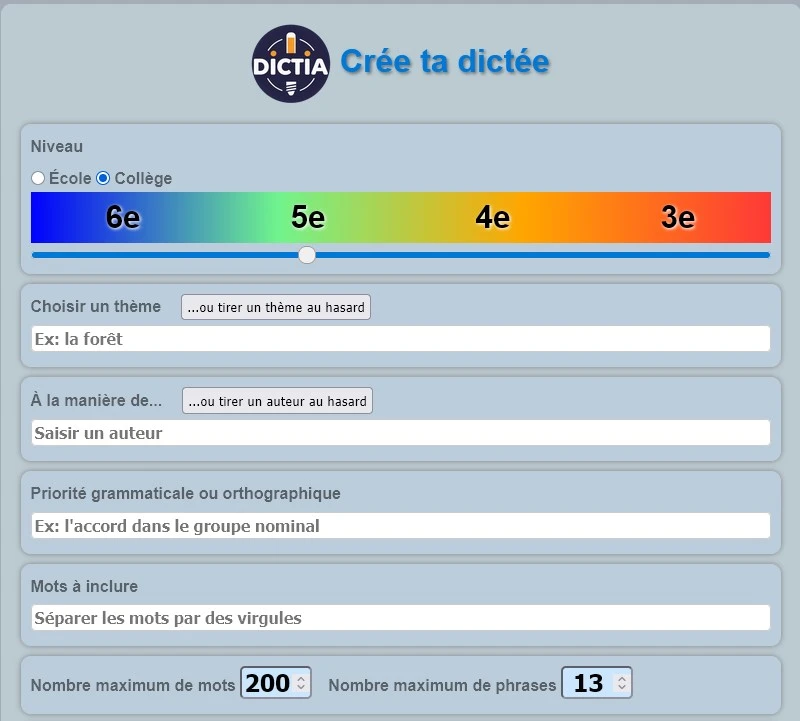

Contrairement à ce qu'on pourrait penser, DictIA n'est pas une intelligence artificielle en soi. C'est ce qu'on appelle une interface de "Prompt Engineering". Sur le plan technique, l'outil est hébergé sur la Forge Apps Education, garantissant un environnement sans traqueurs et respectueux des données. Le code est transparent et s'appuie sur une structure simple :
- Interface intuitive : Ce que les developpeurs appellent le front-end. Il vous suffit de paramétrer vos variables (niveau, thèmes, contraintes...).
- Le Moteur de concaténation : Il injecte vos variables dans un prompt pré-rédigée pour optimiser la réponse de l'IA.
- L'Interconnectivité : Il utilise des liens profonds pour envoyer cette commande vers les plateformes comme Mistral, ChatGPT, Claude ou Perplexity.
Les fonctionalités clés pour les enseignants
1. Paramétrage granulaire
L'outil permet de définir des critères que l'on oublie souvent de préciser à une IA généraliste. C'est l'intérêt majeur de DictIA
- Le niveau scolaire : Du cycle 2 au cycle 3, avec une adaptation du vocabulaire.
- Le focus orthographique : Vous pouvez forcer l'IA à utiliser des mots contenant le son [on/ont], des accords complexes en "es" ou des participes passés spécifiques.
- Le thème : Indispensable pour lier la dictée à un projet de classe (histoire, sciences, littérature).
- Le style : Vous pouvez orienter le style littéraire de la dictée selon un auteur favori ou étudié.
- Longueur de la dictée : La longueur de la dictée est définie par le nombre de mot et de phrases que vous indiquerez. Par défaut, il y a 100 mots et 8 phrases.
- Les temps : Vous pouvez choisir les temps utilisés dans la dictée. Par défaut, certains temps sont cochés selon le niveau choisi mais tout reste paramétrable.
2. La différenciation en un clic
Un autre aspect puissant de DictIA est de proposer des options pour générer instantanément :
- Une dictée à trous : L'IA identifie les mots cibles et crée l'exercice de remédiation automatiquement.
- Une version simplifiée : Réduction de la longueur des phrases pour les élèves en difficulté.
3. L'ouverture vers les modèles souverains
DictIA ne vous enferme pas chez
un géant américain. L'interface propose d'utiliser Mistral, l'IA française, ce qui est un point
fort pour rester en cohérence avec les préconisations de l'Éducation Nationale sur la
souveraineté numérique.
Si vous souhaitez éviter de faire analyser vos requêtes personnelles par les IA en ligne, il
existe des modèles libres et efficaces que vous pouvez utiliser localement sur votre ordinateur.
Pour ceux qui sont curieux et un peu geek, voici quelques projets intéressants :
- Ollama : Propose divers modèles libres tels que Mistral, Gemini, Llama, DeepSeek ou Phi.
- OpenWebUI : Offre une interface graphique inspirée des chats en ligne pour faciliter l'interaction avec ces modèles.
- Jan : Très simple à utiliser : après installation, directement depuis Jan, téléchargez et discutez localement avec le modèle d'IA de votre choix. De plus, Jan vous indique quels modèles sont susceptibles de tourner correctement sur votre machine.